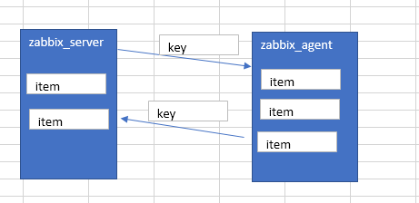
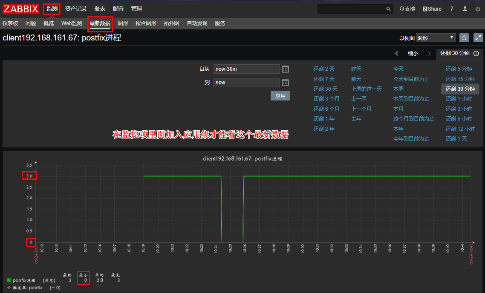

zabbix自定义监控

文章目录
进程和日志
有的时候zabbix提供的监控项目，不能满足我们生产环境下的监控需求，此时我们就要按照zabbix的规范自定义监控项目，达到监控的目的
zabbix_get:模拟zabbix_server和agent获取数据
相关概念
item: Items是从agnet主机里面获取的所有数据。通常情况下我叫itme为监控项,item由key+参数组成
Key：我们可以理解为key是item的唯一标识，在agent端有很多监控项，zabbix-server根据key区分不同的监控项
trigger：触发器是建立在item数据上的，具有阈值触发事件的功能 > 基本格式: :.()} >
> server:agent名称，加入主机时配置的 >
> key：就是上面说的key >
> function：对阈值进行操作的函数，以下函数 >
> operate：表达式 >
> constant：常量
例如：{docker02:proc.mysql.last()}<>1
- 不用担心trigger表达式不好写，在定义好item后，在zabbix点点就自动生成了
1 2 3 4 5 6 |
zabbix_get -s 192.168.161.67 -k ckproc[postfix] 3 # -s:指定agent地址 # -p：agent端口 # -k：指定item的key # [postfix]:向脚本传递的参数(用逗号分隔) |
下面以监控postfix服务进程为例，做了自定义监控
1. zabbix_server与zabbix_agent

- zabbix_server通过发送key给zabbix_agent,然后agent端口根据key，把所要监控的item的最新数据返回给server端
2. 自定义监控项
- 自定义脚本格式
1 2 3 4 |
key[*],[command|sh] # <key[参数]>，<命令或者脚本> # [*]：固定格式，表示server端是否传过来参数，在命令或者脚本中用$1,23...引用，shell脚本中的引用$$1,2,3..引用， # 如果server端不传参数，[*]可以不写 |
2.1 修改agent端配置文件，自定义key
1
|
vim /usr/local/etc/zabbix_agentd.conf |
- 做以下修改
1 2 3 |
UnsafeUserParameters=1 # 默认为0，表示不允许自定义key # 监控*进程是否存在，[*]是server端传递参数，是服务名称 UserParameter=ckproc[*],/usr/bin/bash /scripts/proc.sh $1 |
然后写脚本
1 2 3 4 5 6 7 |
mkdir /scripts vim /scripts/proc.sh #!/bin/bash proc_count=$(ps -ef|grep -Ev "grep|$0" |grep -c $1) echo $proc_count chown -R zabbix.zabbix /scripts/ chmod +x /scripts/* |
2.2 web页面配置，加入自定义监控项
1.【配置】->【主机】,点击所要监控的主机
2.点击【监控项】
3.点击右上角【创建监控项】
4.创建监控项
- 这里的key值对应我们在agent端自定义的key

- 重启agent服务
1 2 |
pkill zabbix zabbix_agentd |
2.3 查看返回的数据：【检测中】->【最新数据】
最新数据是zabbix所有监控项的收集的数据的概览，从这可以看到监控项最新的监控值

从图中可以看到，postfix监控项返回的数值是3，说明postfix的进程数为3，代表postfix运行正常，如果想要可以邮件报警，可以给这个自定义的添加触发器，参考“Zabbix监控组件及流程”一章
2.4 测试结果:

下面是以监控日志，做了自定义监控
注：监控日志用shell脚本难以实现记录之前已经看过的日志，为了解决这个问题，我们用python来监控
编写Python程序，可以点击查看
说明：第一个参数为日志文件名（必须有，相对路径、绝对路径均可）
第二个参数为“记录之前所看位置”的文件路径（可选项，若不设置则默认为/tmp/logseek文件。相对路径、绝对路径均可）
第三个参数为搜索关键字，默认为 Error
将脚本文件下载后上传到/scripts/目录下，将文件赋予执行权限并将属主和属组改为zabbix
1 2 3 4 5 6 7 8 9 10 11 12 13 14 15 16 17 18 19 20 21 22 23 24 25 26 27 28 29 30 31 32 33 34 35 36 37 38 39 40 41 42 43 44 45 46 47 48 49 50 51 52 53 54 55 56 57 58 59 60 61 62 63 64 65 66 67 68 69 70 71 72 73 74 75 76 77 78 79 80 81 82 83 84 85 86 87 88 89 90 |
放脚本路径和上一个例子一样,如果不做上一个例子,自行创建目录,更改属主属组
vim /scripts/log.py
#!/usr/bin/env python3
import sys
import re
def prePos(seekfile):
global curpos
try:
cf = open(seekfile)
except IOError:
curpos = 0
return curpos
except FileNotFoundError:
curpos = 0
return curpos
else:
try:
curpos = int(cf.readline().strip())
except ValueError:
curpos = 0
cf.close()
return curpos
cf.close()
return curpos
def lastPos(filename):
with open(filename) as lfile:
if lfile.readline():
lfile.seek(0,2)
else:
return 0
lastPos = lfile.tell()
return lastPos
def getSeekFile():
try:
seekfile = sys.argv[2]
except IndexError:
seekfile = '/tmp/logseek'
return seekfile
def getKey():
try:
tagKey = str(sys.argv[3])
except IndexError:
tagKey = 'Error'
return tagKey
def getResult(filename,seekfile,tagkey):
destPos = prePos(seekfile)
curPos = lastPos(filename)
if curPos < destPos:
curpos = 0
try:
f = open(filename)
except IOError:
print('Could not open file: %s' % filename)
except FileNotFoundError:
print('Could not open file: %s' % filename)
else:
f.seek(destPos)
while curPos != 0 and f.tell() < curPos:
rresult = f.readline().strip()
global result
if re.search(tagkey, rresult):
result = 1
break
else:
result = 0
with open(seekfile,'w') as sf:
sf.write(str(curPos))
finally:
f.close()
return result
if __name__ == "__main__":
result = 0
curpos = 0
tagkey = getKey()
seekfile = getSeekFile()
result = getResult(sys.argv[1],seekfile,tagkey)
print(result)
chmod +x /scripts/log.py
chown zabbix.zabbix log.py |
- 修改客户端/usr/locla/etc/zabbix_agentd.conf文件
1 2 |
UnsafeUserParameters=1 UserParameter=cklog[*],/usr/bin/python /scripts/log.py $1 $2 $3 |
- 创建日志文件（有，则不需要创建），创建存放读取记录的目录并设置属主和属组为zabbix
1 2 3 4 5 6 7 8 9 10 11 12 |
cat >> /tmp/zabbix_agentd.log << EOF sklfs sfkfnkslf error errorksdm Error failed failed whs itwhs qwszc EOF |
- 重新启动服务
1 2 |
pkill zabbix zabbix_agentd |
- 在服务端手动执行脚本
1 2 |
zabbix_get -s 192.168.161.67 -k cklog[/tmp/zabbix_agentd.log,/tmp/itwhs,failed] 1 |
- 添加主机监控项
- 给监控项添加触发器

- 添加报警媒(介参考“Zabbix监控组件及流程”一章)
- 添加用户报警类型(介参考“Zabbix监控组件及流程”一章)
- 添加动作(介参考“Zabbix监控组件及流程”一章)
测试结果: